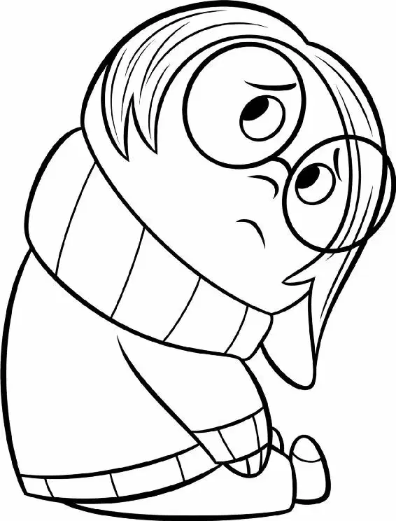

“Look at me! I’m closer to the station ’cause I’m taking the shortcut!” Bing Bong sang from inside.
“Let’s go around. This way.” Sadness pointed to the path alongside the incredibly long building. Joy looked back at Bing Bong.
“Almost there!” Bing Bong shouted.
Joy turned to Sadness. “If you want to walk the long way, go for it. But Riley needs to be happy. I’m not missing that train,” Joy said. “Bing Bong knows what he’s doing. He’s part dolphin. They’re very smart!” she added.
“Well… I guess… ,” Sadness said, following Joy through the hatch and into the building.
Inside, it was dark and gray. There were strange shapes scattered all around.
Outside, two mind workers wheeled a cart over to the hatch they had just entered. They didn’t realize that Bing Bong, Sadness, and Joy were inside the building.
“Okay, what Abstract Concept are we trying to comprehend today?” one worker asked.
“Um… loneliness,” said the other worker, checking his clipboard.
“Looks like there’s something in there,” said the first worker, peering into the hatch. “I’m going to turn it on for a minute and burn out the gunk.” The worker closed the door and Joy, Sadness, and Bing Bong heard a slam.
Suddenly, the room brightened as white lights flickered on. Strange shapes floated up off the floor and hung in the air.
“Say, would you look at that,” said Bing Bong, marveling at the sight.
One of the shapes swiped by underneath Joy’s feet. “Whoa!” she yelled.
Sadness ducked out of the way as another shape whizzed closely by her head. “Ah!”
“What’s happening?” Joy cried.
“Oh no,” said Sadness. “They turned it on.”
“Huh! I’ve never seen this before,” said Bing Bong, watching as the floating shapes started to melt.
Joy and Sadness screamed as they took in the sight of Bing Bong’s head: it had transformed into a misshapen mess and made him look like a multifaceted figure from a Picasso painting. His trunk looked like a jagged staircase, and one of his eyes moved over to the now flat side of his head!
Then the same thing happened to Joy and Sadness! Their bodies shuffled around, as if they were built out of tiny cubes that made them look like weird, mixed-up versions of their former selves. All their body parts were twisted around and in the wrong places!
“What is going on?” Joy cried, feeling her nose shift up to the top of her head.
“We’re abstracting!” screamed Sadness. Her mouth moved to where her right ear used to be, and her eyes were stacked on top of each other! “There are four stages. This is the first: nonobjective fragmentation!”
They struggled to walk, their bodies moving stiffly without knees and elbows.
“All right, don’t panic!” said Bing Bong. “What’s important is that we all stay together.”
Suddenly, Bing Bong’s left arm fell off! Joy screamed as her head fell off! Then Sadness’s right leg fell off, causing her to topple over.
“We’re in the second stage,” Sadness said. “We’re deconstructing!”
All three of them separated into pieces, like dolls that had been taken apart. “Ahh!” screamed Bing Bong. “I can’t feel my legs!” Bing Bong’s arms found his legs and grabbed them. “Oh, there they are.”
Joy tried to put herself back together again and grabbed Sadness’s leg instead. She slapped it on and looked like a mismatched puzzle.
Sadness chased after her disassembled head. “We’ve got to get out of here before we’re nothing but shape and color and get stuck here forever!” she screamed.
“Stuck? Why did we come in here?” Joy yelled. “I told you, it’s a shortcut!” said Bing Bong.
They could hear the train whistling outside and watched through the window as it pulled into the station. “The train!” Joy cried.
POP! Joy, Sadness, and Bing Bong changed form once again. Now they were flat!
“Oh no,” said Sadness. “We’re two-dimensional! That’s stage three!”
“Depth!” yelped Bing Bong. “I’m lacking depth!”
They struggled to make their way through the strange, flat world. Things that seemed close by took a long time to reach. Doors that seemed just their size suddenly became too small when they tried to walk through them. “We can’t fit!” grunted Joy, trying to squeeze through.
POP! They changed again. Now they were shapeless blobs of color, like lumps of clay.
“Oh no, we’re nonfigurative,” said Sadness. “This is the last stage!”
“We’re not going to make it!” said Bing Bong.
Sadness hit the ground and instantly transformed into a blue line. “Wait!” she said. “We’re two dimensional. Fall on your face!” She crawled like an inchworm along the ground.
Joy and Bing Bong followed Sadness’s lead and fell, turning into lines of color, too. They wiggled and squirmed right through the window!
TOOT, TOOT! The train whistled as it prepared to leave the station.
“Wait! Stop!” Joy yelled. She tried to jump but couldn’t. POP! Joy changed back into her two-dimensional shape and fell down flat. She looked up at the passing train. “Nooooo!” she said, defeated, watching as the train chugged and puffed its way toward Headquarters.
She turned to Bing Bong. “How long until the next train?”
He shrugged. “Who knows?”
